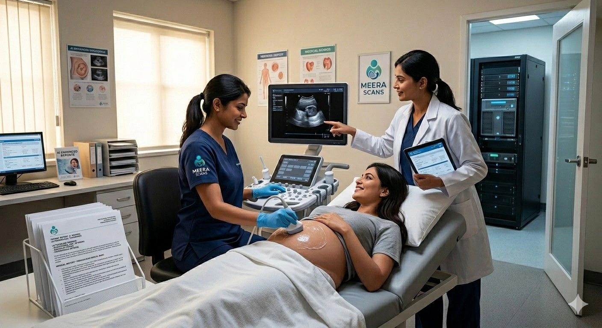

Artificial intelligence is no longer a future concept in medical imaging — it is an active, measurable clinical tool that is already reshaping how diagnostic centres operate across India. AI in radiology India has moved from research papers to real-world deployment at progressive diagnostic centres, and the results are unambiguous: faster turnaround, fewer measurement errors, more consistent reporting, and ultimately better outcomes for patients. At Meera Scans — the leading scan centre in Madurai — AI is not a marketing term. It is a functioning part of the diagnostic workflow that supports our sonologists, improves our reporting speed, and raises the quality floor across every scan category we offer. This article explains what AI in radiology India actually means at the clinical level, how AI-driven ultrasound works in practice, why automated imaging tools reduce error while preserving the sonologist's central role, how our high-tech scan centre delivers fast diagnostic reports Madurai patients rely on, and why precision diagnostics powered by AI healthcare Madurai capabilities represent the new standard for any scan centre in Madurai that takes diagnostic quality seriously. Contact Meera Scans today to book at the most advanced scan centre in Madurai and experience AI-driven ultrasound reporting firsthand.
What AI in Radiology India Actually Means: Beyond the Buzzword
When patients hear AI in radiology India, the immediate mental image is often of a robot reading scans. The clinical reality is both more specific and more useful than that. AI in radiology India refers to a category of machine learning software integrated into imaging equipment and reporting platforms that assists trained clinicians with specific, well-defined subtasks — not with the overall diagnostic judgment, which remains firmly with the human specialist.
At a functioning high-tech scan centre like Meera Scans, the practical applications of AI in radiology India include automated measurement of fetal biometry parameters during obstetric scans, real-time image quality scoring that alerts the sonologist when a frame is suboptimal for measurement, structured report generation that pre-populates fields based on scan data, anomaly flagging that draws attention to findings that fall outside normal reference ranges, and workflow management tools that reduce administrative delays between scan completion and report delivery. Each of these is a discrete application of AI healthcare Madurai infrastructure — not a single omniscient system, but a coordinated set of task-specific tools operating alongside the experienced sonologist at every stage of the examination.
At Meera Scans — Madurai's high-tech scan centre — AI in radiology India is integrated as a clinical support layer. Every finding, every measurement, and every report is reviewed and approved by a qualified sonologist before it reaches the patient. AI-driven ultrasound improves consistency and speed; human expertise ensures accuracy and judgment.
How AI-Driven Ultrasound Works at Meera Scans
AI-driven ultrasound at Meera Scans operates at two levels: the acquisition level (during the scan itself) and the reporting level (after the scan is complete). Understanding both layers is essential for patients who want to know what makes our scan centre in Madurai different from a conventional diagnostic facility.
AI at the Acquisition Level: Smarter Scanning in Real Time
During an ultrasound examination at our high-tech scan centre, the AI-driven ultrasound platform analyses the live image stream in real time. The system identifies anatomical landmarks — the fetal head, abdomen, femur, and cardiac four-chamber view in obstetric scanning, or the gallbladder, liver, kidneys, and thyroid in general imaging — and assists the sonologist by automatically placing measurement callipers on the correct anatomical points once an optimal plane is achieved.
This automated imaging capability serves two specific purposes. First, it reduces the time spent manually placing callipers on each structure, which increases overall scan efficiency and enables fast diagnostic reports Madurai patients can receive on the same day as their appointment. Second, and more importantly from a clinical standpoint, automated imaging removes the inter-observer variability that affects manual measurement — meaning two sonologists performing the same scan on the same patient will now produce measurements that are more consistent with each other than in a purely manual workflow. This is a direct contribution to precision diagnostics at the individual patient level.
AI at the Reporting Level: Structured, Faster Reports
The reporting stage is where the patient-facing benefit of AI healthcare Madurai capability is most visible. At a traditional diagnostic centre, a sonologist completes the scan, then manually types or dictates the full report — a process that can take 20–40 minutes for a comprehensive obstetric examination. This delay is the primary reason why many conventional centres cannot deliver fast diagnostic reports Madurai patients need on the same day.
At Meera Scans — the high-tech scan centre that has invested in AI-driven ultrasound reporting infrastructure — the measurement data captured during the scan is automatically structured into a pre-populated report template. The sonologist then reviews every pre-populated field, adds clinical interpretation, flags any findings that require the patient's obstetrician's attention, and approves the report. This workflow compresses the reporting stage substantially, enabling us to deliver fast diagnostic reports Madurai patients receive via WhatsApp or email before they leave the centre — or within hours of their appointment for complex examinations.

Automated Imaging: What It Measures and Why It Matters
Automated imaging is the most technically specific component of AI in radiology India as it applies to day-to-day ultrasound work. Understanding what automated imaging tools actually measure — and why those measurements matter for clinical outcomes — helps patients appreciate the difference between a high-tech scan centre and a basic diagnostic facility.
| Scan Type | Automated Imaging Measurements | Clinical Benefit of AI Assistance |
|---|---|---|
| Obstetric (2D/3D/4D) | Biparietal diameter, head circumference, abdominal circumference, femur length, amniotic fluid index, cervical length | Consistent fetal biometry; automated gestational age calculation; flagging of growth restriction or macrosomia patterns — core precision diagnostics in antenatal care |
| Fetal cardiac / ECHO | Four-chamber view identification, ventricular wall thickness, outflow tract alignment assessment | AI-assisted plane recognition helps achieve optimal cardiac views faster, supporting fast diagnostic reports Madurai obstetricians rely on for referral decisions |
| Abdominal / organ imaging | Organ dimension measurement (liver, spleen, kidneys, gallbladder wall thickness), lesion boundary delineation | Automated imaging of organ dimensions improves repeatability; lesion flagging alerts sonologist to findings requiring further evaluation |
| Thyroid | Nodule volume calculation, echogenicity classification support, vascular pattern mapping with Doppler AI overlay | Volume tracking for serial examinations; consistency in nodule characterisation supports precision diagnostics in thyroid monitoring programmes |
| Gynaecological / pelvic | Uterine dimensions, endometrial thickness, follicle count and volume in PCOS assessment | Automated antral follicle counting reduces the time and subjectivity involved in PCOS diagnosis; consistent endometrial measurements improve cycle monitoring accuracy |
| Doppler flow studies | Waveform analysis, pulsatility index, resistivity index, peak systolic velocity measurement | AI waveform analysis reduces manual cursor placement errors; pattern recognition flags abnormal flow states for sonologist review — a direct AI-driven ultrasound contribution to fetal wellbeing assessment |
Precision Diagnostics: How AI Raises the Quality Floor
Precision diagnostics is a term that describes the consistent, reproducible production of accurate measurements and clinically reliable findings — not just on average, but for each individual patient at each individual visit. This is where AI in radiology India makes its most meaningful contribution to patient care, because the traditional barriers to precision diagnostics in ultrasound are not equipment quality or sonologist skill alone — they are human factors: fatigue, workload, and the inherent variability between examiners.
At Meera Scans — the high-tech scan centre delivering AI healthcare Madurai standards — the integration of AI-driven ultrasound tools addresses human variability directly. When the same automated imaging algorithm places callipers on every biparietal diameter measurement at every obstetric scan, the measurement is taken from exactly the same anatomical reference points every time — regardless of which sonologist is performing the examination or how many patients have been seen that day. This is precision diagnostics in its most practical form: the patient's third-trimester growth scan is directly comparable to their second-trimester anomaly scan because both measurements were taken using the same algorithmic standard.
The clinical downstream effect is significant. When fetal growth measurements are consistent across serial scans at the same scan centre in Madurai, the obstetrician can make more confident decisions about growth trajectory, induction timing, and fetal wellbeing. When gallbladder or thyroid nodule measurements are reproducible across follow-up visits, monitoring programmes are meaningful rather than confounded by measurement noise. Precision diagnostics through automated imaging is therefore not a technical luxury — it is a clinical necessity for any scan centre in Madurai that serves patients with ongoing monitoring needs.
Fast Diagnostic Reports Madurai: How Speed and Accuracy Coexist
One of the most common concerns patients raise when they hear about AI healthcare Madurai tools is whether faster reports mean less accurate ones. At Meera Scans, the answer is unambiguously no — and understanding why requires a clear picture of how fast diagnostic reports Madurai are produced at our high-tech scan centre.
Speed and accuracy in reporting are not competing objectives when automated imaging handles the structuring and pre-population tasks, and the trained sonologist focuses entirely on clinical review and interpretation. The time that AI-driven ultrasound reporting tools save is not time cut from the diagnostic process — it is time recovered from administrative data entry. The sonologist at Meera Scans spends more focused time on interpretation, not less, precisely because automated imaging has eliminated the most repetitive clerical elements of report production.
Fast diagnostic reports Madurai patients receive from Meera Scans are not produced by cutting corners. They are produced by applying AI-driven ultrasound tools to the parts of the workflow that benefit from automation — measurement capture, data structuring, reference range checking — while reserving the diagnostic judgment entirely for the experienced clinician. This is precision diagnostics and speed working together, not in opposition.
AI Does Not Replace the Sonologist: Why Human Expertise Remains Central
Every discussion of AI in radiology India must address the question that patients most need answered: does AI replace the sonologist? At Meera Scans and at every reputable high-tech scan centre operating AI healthcare Madurai standards, the answer is an unambiguous no — for reasons that go beyond reassurance and rest on clinical fundamentals.
AI-driven ultrasound systems are trained on large datasets to perform specific, narrow tasks. They are excellent at placing callipers on a biparietal diameter plane that matches their training data. They are not equipped to recognise that a patient is distressed and requires careful explanation of a finding. They cannot correlate an unexpected placental appearance with the patient's clinical history, which is not in the image. They do not make the judgment call about whether a borderline finding in a 28-week obstetric scan warrants immediate referral or a follow-up appointment in two weeks. These are the decisions that define diagnostic medicine — and they require the trained, experienced sonologist that patients see at Meera Scans, the scan centre in Madurai that has served over 10,000 patients across all scanning specialisms.
Precision diagnostics requires both layers to be present. The automated imaging layer provides consistency and speed. The human expert layer provides judgment, contextualisation, and clinical communication. Remove either layer and diagnostic quality declines. The proposition of AI healthcare Madurai at Meera Scans is precisely this combination — not automation replacing expertise, but automation amplifying it.

AI Healthcare Madurai: How AI Is Applied Across All Departments at Meera Scans
AI healthcare Madurai at Meera Scans is not confined to obstetric imaging. The automated imaging and reporting infrastructure spans every clinical department at our high-tech scan centre, making fast diagnostic reports Madurai the standard across all scan types rather than a selective benefit available only for pregnancy scans.
- Obstetric and 4D scanning — AI-driven ultrasound fetal biometry, amniotic fluid index automation, Doppler waveform analysis, and 4D image quality optimisation are all integrated into the obstetric workflow at our scan centre in Madurai
- Anomaly scan and TIFFA — automated imaging plane recognition assists with achieving all 18+ required anatomical views in the 20-week anomaly scan, reducing scan time while maintaining completeness standards central to precision diagnostics
- Fetal echocardiography — AI cardiac plane identification and outflow tract view assistance supports consistent detection of congenital cardiac findings at our high-tech scan centre
- Abdominal and pelvic imaging — organ dimension automated imaging and lesion volume calculation tools support follow-up monitoring programmes for gallbladder, liver, kidney, and uterine pathology patients
- Thyroid scanning — nodule volume tracking and echogenicity pattern support through AI-driven ultrasound tools enables meaningful serial comparison at our scan centre in Madurai
- PCOS and gynaecological imaging — automated antral follicle counting and endometrial thickness measurement are among the most impactful applications of AI healthcare Madurai at Meera Scans for gynaecological monitoring patients
- Doppler flow studies — waveform automated imaging analysis across umbilical, uterine, middle cerebral, and renal artery Doppler studies supports precision diagnostics in high-risk pregnancy monitoring
What Patients Experience at Meera Scans: AI That Is Invisible and Effective
From the patient's perspective, visiting Meera Scans — the high-tech scan centre deploying AI in radiology India tools — does not feel different from any other professional diagnostic appointment. You do not interact with the AI. You do not see it operating. What you do notice is the result: the scan proceeds efficiently, the sonologist is focused and unhurried, and the report is ready the same day.
Fast diagnostic reports Madurai patients receive from Meera Scans are delivered digitally — to WhatsApp or email — often within the appointment itself for routine examinations. The report is comprehensive: all biometric measurements, all clinical findings, the sonologist's interpretation, and any recommendations for the patient's obstetrician or GP. This is precision diagnostics delivered with the efficiency that AI-driven ultrasound reporting infrastructure enables — and it is the standard at the scan centre in Madurai that has invested in AI healthcare Madurai capability precisely to give every patient this experience.
For patients with ongoing monitoring needs — serial obstetric growth scans, thyroid nodule follow-up, PCOS cycle monitoring — the consistency delivered by automated imaging means that their results are directly comparable across visits. This continuity of precision diagnostics is one of the most clinically important and least visible benefits of AI in radiology India as it is implemented at Meera Scans.
Why Meera Scans Is Madurai's Leading High-Tech Scan Centre for AI-Driven Diagnostics
There are many diagnostic centres in Madurai. Very few have made the investment in AI healthcare Madurai infrastructure that makes a genuinely measurable difference to patient outcomes and report turnaround. Meera Scans is the scan centre in Madurai that has made that investment — not as a marketing feature, but as a clinical commitment to every patient who books an appointment with us.
- AI-driven ultrasound reporting across all departments — AI-driven ultrasound measurement and report structuring tools are integrated into obstetric, gynaecological, abdominal, thyroid, and cardiac ultrasound workflows at our high-tech scan centre
- Same-day fast diagnostic reports Madurai — the combination of automated imaging efficiency and experienced on-site sonologists means most reports are delivered on the day of the appointment, making Meera Scans the scan centre in Madurai of choice for patients who need results quickly
- Precision diagnostics through automated measurement consistency — automated imaging measurement tools eliminate inter-observer variability across serial scans, making our precision diagnostics directly comparable for follow-up patients
- Experienced sonologists overseeing every AI-assisted report — AI in radiology India at Meera Scans supports clinicians, never replaces them. Every report reviewed and approved by a qualified specialist before reaching the patient
- Dedicated high-resolution 4D obstetric equipment — the high-tech scan centre infrastructure extends to the imaging hardware itself, with dedicated 4D obstetric machines providing the image quality that makes AI-driven ultrasound measurement assistance most effective
- Transparent, all-inclusive pricing — AI-assisted reporting capability at Meera Scans is included in the standard scan fee. There are no technology surcharges applied to the AI healthcare Madurai tools that benefit every patient
- Trusted by 10,000+ patients in Madurai — the scan centre in Madurai with the deepest patient trust base, built on consistent clinical quality and the precision diagnostics that only a genuinely high-tech scan centre can deliver
To book your appointment at the scan centre in Madurai that has invested in real AI in radiology India capability — or to ask any question about how AI-driven ultrasound, automated imaging, or precision diagnostics apply to your specific scan — contact Meera Scans today or call +91-9042883031. Same-day appointments are available subject to schedule. Experience fast diagnostic reports Madurai and AI healthcare Madurai standards at the high-tech scan centre patients in Tamil Nadu trust.
Frequently Asked Questions
How is AI used in radiology in India?
AI in radiology India is applied across automated imaging analysis, measurement assistance, report generation, and anomaly flagging in ultrasound, CT, and MRI workflows. At Meera Scans — a high-tech scan centre in Madurai — AI-driven ultrasound tools assist sonologists with automated measurements, faster report turnaround, and precision diagnostics across obstetric and general imaging departments.
Does AI replace radiologists and sonologists?
No. AI in radiology India functions as a support layer, not a replacement. At every high-tech scan centre using AI-driven ultrasound tools — including Meera Scans, the leading scan centre in Madurai — the final diagnostic interpretation is made by an experienced, qualified sonologist. AI assists with automated imaging tasks so the clinician can focus on judgment and patient communication, delivering precision diagnostics that combines the best of both.
What is AI-driven ultrasound?
AI-driven ultrasound refers to imaging systems and reporting software that use machine learning to assist with real-time image analysis, automated fetal or organ measurements, anomaly detection, and structured report generation. At Meera Scans — the high-tech scan centre and premier scan centre in Madurai — AI-driven ultrasound tools work alongside experienced sonologists to deliver fast diagnostic reports Madurai patients and their doctors can rely on.
How fast are reports at Meera Scans compared to traditional centres?
Meera Scans delivers fast diagnostic reports Madurai patients can act on the same day. Automated imaging tools and AI-driven ultrasound reporting means most routine reports are completed and delivered digitally — WhatsApp or email — within the appointment itself. This is a key advantage of choosing the high-tech scan centre with genuine AI healthcare Madurai capability.
Is AI in radiology safe for pregnancy scans?
Yes. AI in radiology India as applied to obstetric ultrasound does not change the scanning process — which uses standard diagnostic ultrasound waves proven safe in pregnancy. The AI layer analyses images and assists with measurements after capture. At Meera Scans — Madurai's high-tech scan centre — all AI-driven ultrasound protocols are overseen by qualified obstetric sonologists to ensure clinical safety and precision diagnostics.
What makes Meera Scans a high-tech scan centre in Madurai?
Meera Scans is the high-tech scan centre in Madurai because of its dedicated 4D obstetric imaging equipment, AI-driven ultrasound reporting tools, automated imaging assistance, same-day fast diagnostic reports Madurai delivery, and precision diagnostics backed by experienced on-site sonologists. AI healthcare Madurai capabilities at Meera Scans extend across obstetric, gynaecological, abdominal, thyroid, and cardiac imaging — making it the most advanced scan centre in Madurai for patients who expect the best.
Useful Resources
Trusted clinical and technology references for AI in radiology, automated imaging standards, and AI healthcare developments relevant to diagnostic centres in India and Tamil Nadu.
-
ISUOG — Ultrasound in Obstetrics and Gynaecology Guidelines International Society of Ultrasound in Obstetrics and Gynaecology guidelines covering AI-assisted measurement standards, 3D/4D imaging protocols, and precision diagnostics in obstetric ultrasound practice.
-
NCBI — Artificial Intelligence in Medical Imaging Peer-reviewed clinical reference on the evidence base for AI in radiology, automated imaging tools, machine learning applications in diagnostic ultrasound, and the role of AI in precision diagnostics across medical imaging departments.
-
WHO Maternal Health and Antenatal Imaging World Health Organization guidance on antenatal care, recommended ultrasound examinations during pregnancy, and global standards for maternity imaging and safe motherhood — the clinical framework within which AI-driven ultrasound operates at Meera Scans.
-
PC-PNDT Act — Government of India Official Portal The official portal for PC-PNDT Act compliance — covering registration requirements, patient rights, and legal obligations for all pregnancy ultrasound providers and scan centres in Madurai including AI-assisted diagnostic facilities.
-
Practo — Scan Centres in Madurai Compare scan centres in Madurai including patient reviews, scan pricing, and online appointment booking for obstetric and general diagnostic ultrasound services.